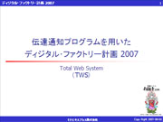
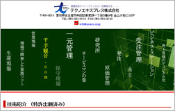

事業内容
業務ソフト開発・販売 senjukannon.com 業務ソフト 千手観音.com
保守・修理サービスの現場でサービスマンが構築した業務ソフトです。
現場から得られたノウハウをWeb上で一元管理する業務ソフトを開発し
経営効率を向上させ保守・修理サービス業務の
アフターコストの削減に貢献しています。

特許 当社の技術紹介です。

https://plidb.inpit.go.jp/
「開放特許情報データーベース」に登録されました。
【特許番号】特許第４６９１３５４号（Ｐ４６９１３５４）
「修理業務一元管理プログラム及び修理業務一元管理システム」
詳しくは、下記ＵＲＬから検索下さい。
https://plidb.inpit.go.jp/